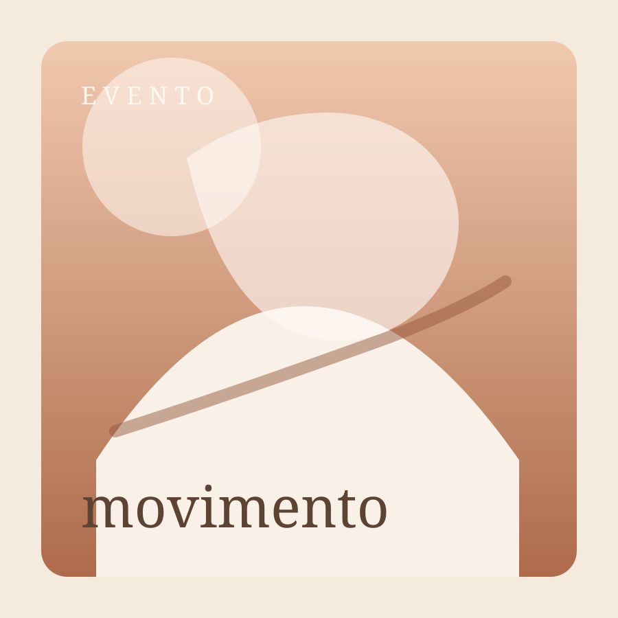
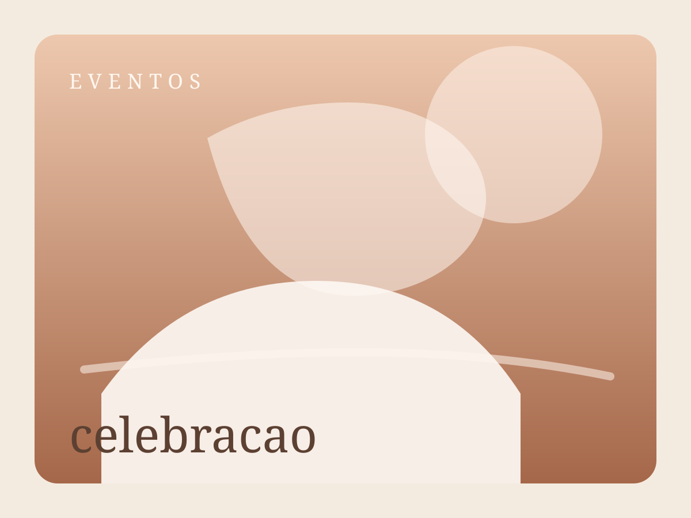

Cidade, eventos e campo aberto
Cidade em movimento
Retratos com composicao urbana, personalidade e um clima visual contemporaneo.
Eventos com verdade
Coberturas sensiveis que registram encontros, detalhes e momentos que passam rapido.
Campo aberto
Ensaios com luz natural, leveza e paisagens que ampliam a emocao da cena.
Entre a energia da rua e o respiro do horizonte, a fotografia ganha vida.

Retratos urbanos
Eventos ao entardecer
Ensaios ao ar livre
Cidade e arquitetura
Momentos espontaneos
Campo e horizonte
Retratos urbanos
Eventos ao entardecer
Ensaios ao ar livre
Cidade e arquitetura
Momentos espontaneos
Campo e horizonte
Atmosfera
Tres cenarios, uma linguagem visual leve, viva e cheia de ar.
Retratos que usam a cidade como textura, cena e identidade visual.
Luz, arquitetura e movimento para imagens que parecem espontaneas e ao mesmo tempo marcantes.
Coberturas que transformam presenca, emocao e encontro em memoria viva.
Um olhar atento aos gestos, aos detalhes e ao ritmo real de cada momento.
Ensaios com horizonte, respiro e uma beleza natural que envolve.
Cenarios abertos, luz suave e direcao leve para imagens naturais e cheias de atmosfera.
Portfolio em destaque
Profissional certificada em fotografia e edicao de imagem.
Mar e horizonte
Paisagens que revelam sensibilidade de luz, cor e composicao em cenarios abertos.

Eventos
Registros que capturam energia, conexao e a memoria real de cada encontro.
Paisagem natural
Detalhes naturais trabalhados com calma, atmosfera e profundidade visual.
Retratos
Retratos dirigidos com leveza para revelar expressao, estilo e autenticidade.
Sobre a experiencia
Da cidade ao campo, o olhar continua o mesmo: humano, leve e presente.
Retratos urbanos
Eventos sociais
Ensaios ao ar livre
Casais
Marca pessoal
Cobertura leve
"Entre a rua, a celebracao e o horizonte aberto, a imagem precisa respirar e continuar verdadeira."
Experiencia
Um caminho simples para transformar encanto visual em mensagem.
Clima imediato
A pessoa bate o olho e sente um portfolio mais aberto, leve e cheio de vida.
Leitura natural
Cidade, eventos e campo aparecem como partes de uma mesma assinatura visual.
Contato sem atrito
Os botoes de Instagram e WhatsApp deixam o proximo passo rapido e direto.
Contato
Seu proximo ensaio, evento ou cobertura comeca por aqui.
Os acessos abaixo ja estao configurados para abrir o Instagram e o WhatsApp direto, facilitando orcamentos, duvidas e agendamentos.